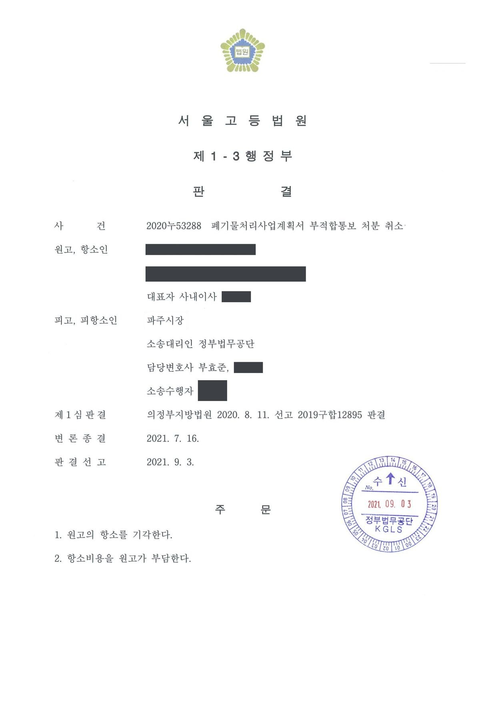

폐기물처리 사업계획서 부적합 통보처분 취소소송 (1·2심)
의정부지방법원 2019구합12895 · 서울고등법원 2020누53288 · 담당변호사 부효준
판결문


사건의 요지
하수슬러지 연료화 시설을 설치하여 폐기물 종합재활용업을 하려는 사업계획서에 대한 부적합 통보에 관하여, 악취·폐수 등 환경 피해 우려를 이유로 한 처분의 판단이 현저히 불합리한지와 비례원칙 위반 여부가 다투어진 사건입니다.
사건의 주요 내용
원고는 유기성 하수슬러지(유기성 오니)를 건조하여 발전소 연료로 만드는 연료화 시설을 설치해 폐기물 종합재활용업을 하려는 법인으로, 2018년 11월 지방자치단체장(피고)에게 하루 90톤의 하수슬러지를 고체연료로 재활용하는 내용의 폐기물처리 사업계획서를 제출하였습니다. 원고는 그 전에도 네 차례 유사한 사업계획서를 제출하였으나 모두 부적합 통보를 받은 상태였습니다.
처분청은 2018년 11월, 하수슬러지 건조 과정에서 심각한 악취와 고농도 폐수(응축수)가 발생할 수 있고, 유사 시설 견학 결과 오염물질이 완벽하게 처리되지 않아 주변 피해가 확인되었으며, 사업예정지 주변에 농경지·축사·민가가 있고 폐수 유출 시 취수원인 인근 하천으로 흘러들 수 있으며, 진출입 도로가 농로와 통로암거에 의존해 대형차량 통행에 어려움이 있다는 등의 사유로 사업계획서 부적합 통보를 하였습니다.
원고는 행정심판을 청구하였으나 2019년 4월 기각되자 부적합 통보처분의 취소를 구하는 소송을 제기하였습니다. 1심에서 청구가 기각되자 원고가 항소하였고, 항소심은 2021년 9월 항소를 기각하였습니다. 부효준 변호사는 정부법무공단 소속으로 1심과 항소심에서 처분청을 대리하였습니다.
원고의 주장
- 처분청의 민원실무심의회 심의에서 환경지도 부서가 대기종별 산정내역서와 용수사용량·폐수발생량 자료의 보완 의견을 냈으므로, 처분청은 보완을 요청하고 원고가 보완하면 적합통보를 해야 할 의무가 있는데 이러한 절차를 거치지 않아 절차상 하자가 있다고 주장하였습니다.
- 최신 특허기술을 적용한 시설이므로 먼지·악취·폐수 모두 법령상 기준치를 충분히 지킬 수 있고 고농도 오염물질이 발생한다고 볼 수 없으며, 기존 도로로 진입도 어렵지 않은데 처분청이 악취방지시설의 성능을 구체적으로 비교·검토하지 않고 유사시설 견학 결과만으로 피해를 예견한 것은 사실오인이라고 주장하였습니다.
- 사업부지에서 800m 떨어진 곳에 폐수를 이용해 액상비료를 만드는 시설이 있는데도 원고에게만 환경오염 우려를 들어 처분한 것은 형평의 원칙에 어긋나고, 처분으로 달성하려는 공익이 원고가 입는 손해보다 크다고 볼 수 없어 비례의 원칙에도 위반된다고 주장하였습니다.
부효준 변호사의 주장
- 민원실무심의회는 민원 처리에 관한 법률에 따라 복합민원의 1회 방문 처리를 위해 운영되는 행정청 내부의 실무기구에 불과하므로, 심의 과정에서 일부 부서가 보완서류가 필요하다는 의견을 냈더라도 처분 전에 반드시 보완 절차를 거쳐야 하는 것은 아니고 원고에게 그러한 절차적 권리가 보장되는 것도 아니라고 반박하였습니다.
- 폐기물처리 사업계획서의 적합 여부 판단, 특히 사람의 건강이나 주변 환경에 미치는 영향처럼 장래의 불확실한 상황에 대한 예측이 필요한 요건에 관하여는 행정청에 광범위한 재량이 인정되므로, 그 판단이 현저히 불합리하거나 형평·비례의 원칙에 뚜렷하게 어긋나지 않는 한 존중되어야 한다고 주장하였습니다.
- 소속 공무원들이 원고가 내세운 특허기술을 적용한 사업장을 직접 견학하여 건조연료에서 먼지와 악취가 발생하고 기준 미달 연료가 방치되는 문제를 확인하였고, 원고의 사업계획서에는 이에 대한 해결방안이 없으며, 사고 시 고농도 폐수가 취수원으로 유입될 위험과 대형차량 통행에 따른 농로 이용자의 피해도 예상된다는 점을 들었습니다.
법원의 판단
1심 법원은 절차상 하자 주장을 받아들이지 않았습니다. 민원실무심의회는 행정청 내부의 실무기구에 불과하여 일부 부서의 보완의견이 있었다는 것만으로 처분 전에 보완 절차를 거쳐야 한다고 볼 수 없고, 그 보완의견이 적합통보를 전제로 한 것이라고 볼 근거도 없다는 것입니다.
재량권 일탈·남용에 관하여는, 폐기물관리법 제25조 제2항과 환경정책기본법의 규정 체계상 행정청은 생활환경과 자연환경에 미치는 영향을 두루 검토하여 사업계획서의 적합 여부를 판단할 광범위한 재량을 가지며, 그 재량적 판단은 현저히 합리성이 없거나 형평·비례의 원칙에 뚜렷하게 배치되지 않는 한 폭넓게 존중되어야 한다는 대법원 판례의 법리를 전제로 하였습니다. 그리고 견학에서 확인된 먼지·악취 문제에 대한 해결방안이 사업계획서에 없고 소송 과정에서도 원고가 구체적으로 소명하지 않은 점, 사고 시 취수원 오염 위험, 대형차량 통행에 따른 농로 이용자의 피해 등을 들어 사실오인이나 재량권 일탈·남용이 없다고 보았습니다.
형평 위반 주장에 대하여는 원고가 비교 대상 업체를 구체적으로 밝히지 않았고 심각한 악취·응축수를 발생시키는 하수슬러지 재활용 사업과 같다고 보기도 어렵다고 하였으며, 환경보호라는 공익이 원고의 경제적 피해보다 작다고 볼 수 없고 원고가 같은 부지에서 다른 사업(비료 제조업)의 허가를 받아 영업할 수도 있다는 점에서 비례원칙 위반도 아니라고 하여 청구를 기각하였습니다. 항소심도 원고가 추가로 제출한 진술서 등을 보더라도 처분의 판단이 현저히 불합리하다거나 형평·비례의 원칙에 뚜렷하게 배치된다고 볼 수 없다고 하여 항소를 기각하였습니다.
위와 같은 관련 규정들의 내용과 체계, 입법취지에 비추어 보면, 행정청은 사람의 건강이나 주변 환경에 영향을 미치는지 여부 등 생활환경과 자연환경에 미치는 영향을 두루 검토하여 폐기물처리사업계획서의 적합 여부를 판단할 수 있으며, 이에 관해서는 행정청에 광범위한 재량권이 인정된다(대법원 2017. 10. 31. 선고 2017두46783 판결 등 참조). 따라서 법원이 적합 여부 결정과 관련한 행정청의 재량권 일탈ㆍ남용 여부를 심사할 때에는 해당 지역의 자연환경, 주민들의 생활환경 등 구체적 지역 상황, 상반되는 이익을 가진 이해관계자들 사이의 권익 균형과 환경권의 보호에 관한 각종 규정의 입법 취지 등을 종합하여 신중하게 판단하여야 한다. '자연환경ㆍ생활환경에 미치는 영향'과 같이 장래에 발생할 불확실한 상황과 파급효과에 대한 예측이 필요한 요건에 관한 행정청의 재량적 판단은 그 내용이 현저히 합리적이지 않다거나 상반되는 이익이나 가치를 대비해 볼 때 형평이나 비례의 원칙에 뚜렷하게 배치되는 등의 사정이 없는 한 폭넓게 존중될 필요가 있다(대법원 2019. 12. 24. 선고 2019두45579 판결 등 참조).
한편, 처분이 재량권을 일탈ㆍ남용하였다는 사정은 그 처분의 효력을 다투는 자가 주장ㆍ증명하여야 한다(대법원 2016. 10. 27. 선고 2015두41579 판결 등 참조).
의정부지방법원 2019구합12895 판결 이유 '2. 다. 2) 가)' 부분
처분청 소속 공무원들은 원고가 주장하는 특허기술을 적용한 폐기물 처리 사업장을 방문하여 최종 생산된 건조연료에서 먼지와 악취가 발생하는 문제점들을 발견하였고, 건조연료가 기준에 미달되어 발전소로 공급되지 않을 경우 다른 문제점들도 발생할 수 있음을 확인하였으며, 피고는 이를 이 사건 처분의 주된 처분사유로 제시하였다. 원고가 제출한 사업계획서에는 이러한 문제점들에 대한 해결방안이 마련되어 있지 않고, 이 사건 소송과정에서도 원고는 건조연료 생산 후의 비산먼지, 악취에 관한 해결방안이나 기준에 미달하여 발전소로 공급되지 않는 건조연료의 비율, 처리방법 등에 관하여 구체적인 소명을 하고 있지 않다. 게다가 이 사건 사업부지 주변에는 주택과 농경지 등이 위치하고 있으므로 이 사건 사업부지에서 비산먼지와 악취가 발생할 경우 주민들의 피해가 예상된다.
의정부지방법원 2019구합12895 판결 이유 '2. 다. 2) 다) ①' 부분
갑 제17호증(진술서)을 비롯하여 원고가 제1심 및 당심에서 제출한 자료들만으로는, 악취, 폐수 등으로 인근 주민 또는 환경에 피해가 발생할 우려가 있다는 이 사건 처분의 판단 내용이 현저히 합리적이지 않다거나 상반되는 이익이나 가치를 대비해 볼 때 형평이나 비례의 원칙에 뚜렷하게 배치된다고 볼 수 없다.
서울고등법원 2020누53288 판결 이유
※ 판결 이유 가운데 이 사건의 판단 기준이 된 부분을 그대로 옮긴 것으로, 당사자 이름 등은 가렸습니다.
이 사건이 보여 주는 것
폐기물처리 사업계획서의 적합 여부는 허가 전 단계의 판단이지만, 부적합 통보를 받으면 사업 자체를 시작할 수 없으므로 실질적으로 허가 거부와 같은 효과가 있습니다. 법원은 이 판단에 행정청의 광범위한 재량을 인정하고, 특히 악취·폐수처럼 장래의 환경 영향에 대한 예측은 현저히 불합리하지 않은 한 존중합니다. 사업자가 이를 다투려면 재량권 일탈·남용을 스스로 주장·증명해야 합니다.
이 사건에서는 처분청이 유사 시설을 직접 견학하여 확인한 구체적 문제점을 처분사유로 제시한 반면, 원고는 그 문제점에 대한 해결방안을 사업계획서나 소송에서 구체적으로 소명하지 못한 점이 결정적이었습니다. 환경 관련 인허가를 다투는 쪽은 '기준을 지킬 수 있다'는 일반적인 주장보다 처분사유로 지목된 문제 하나하나에 대한 기술적 해결방안과 자료를 내놓아야 합니다.
관련 법령폐기물관리법 제25조 제1항·제2항·제3항 · 환경정책기본법 제3조 제1호, 제12조, 제13조 · 민원 처리에 관한 법률 제38조, 같은 법 시행령 제36조 · 행정소송법 제8조 제2항 · 민사소송법 제420조
관련 단어폐기물처리 사업계획서부적합 통보폐기물 종합재활용업하수슬러지연료화 시설재량권 일탈·남용환경 영향 예측민원실무심의회절차적 하자비례의 원칙형평의 원칙기각
이 사건의 소개 글은 인스타그램(@lawyer.boo)에도 있습니다.
비슷한 처분을 받으셨다면
행정처분은 처분이 있음을 안 날부터 90일 이내에 행정심판이나 취소소송으로 다투어야 하고, 기간이 지나면 돌이킬 수 없는 처분은 집행정지를 서둘러야 합니다. 처분서를 받은 날짜부터 확인해 드립니다.